I. Işığın Tanrıları
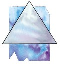Paladin (Ejderhaların Lordu): Paladin, İyiliğin Babası ve Adaletin Ustası'dır. Tüm iyilik tanrıların yöneticisidir ve en yücesidir. Dünya üzerinde tarikat olarak Solamniya Şövalyeleri'nin, özellikle de Gül Tarikatı'nın tanrısıdır. Kontrolü altındaki alanlar arasında düzen, umut, ışık, yöneticilik ve koruyuculuk vardır. Sembolleri gümüş üçgen, çam ağacı (Silvanesti) ya da örs (Thorbardin) tür. Renkleri gümüş ve beyazdır. Takımyıldızı, Platin Ejderha takımyıldızıdır. Paladine'in avatarları Muhteşem ...{12} ve bir platin ejderhadır. Diğer isimleriyse bölgelerine göre şunlardır: Draco Paladin (Ergoth), Gökyüzübıçağı (Goodlund), Ejderhalordu (Mithas), E'li (Silvanesti), Çekiç Thak (Thorbardin), Bah'Mut (İstar), Büyük Ejderha (Solamniya), ... (Kenderyurdu).
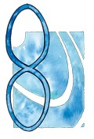Mishakal (Şifalı El): Mishakal, Krynn üzerinde "Şifacı" adıyla tanınır. Paladin'in eşi ve Habbakuk, Kiri-Jolith ve Solinari'nin annesidir. Kontrolü altındaki alanlar arasında şifa, bilgi, verimlilik, yaşam, güzellik ve kutsama vardır. Sembolü, mavi sonsuzluk işaretidir. Rengi, mavinin herhangi bir tonudur. Takımyıldızı, sonsuzluk işareti takımyıldızıdır. Mishakal'ın avatarları arasında en çok kullandığı, eşsiz bir sağlığa ve fiziksel kondisyona sahip güzel bir kadındır. Diğer isimleriyse bölgelerine göre şunlardır: Ka-Mel-Sha, Yuvadaki Şifacı (Kharolis/Tarsis), Mesalax (Thorbardin), Meshal (Buzduvarı), Mishas (Ergoth), Quenesti Pah (Silvanesti), Quen Illumini (Qualinesti), Gökyüzühanımı (Goodlund), Mavi Leydi (Balifor, Hylo), İmparatoriçe (Mithas), Işığın Kaynağı, Işık Getirici (Solamniya).
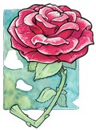Majere (Zihnin Efendisi): Majere, organizasyonların ve endüstrinin tanrısıdır. Kontrolü altındaki alanlar arasında meditasyon, kontrol, düşünce, güven, merhamet ve ilham vardır. Sembolleri bakır örümcek, bir tek gül (Qualinesti, Silvanesti) ya da peygamberdevesi (Solamniya) dir. Renkleri, bakır rengi ve kırmızıdır. Takımyıldızı, Gül takımyıldızıdır. Majere dünya üzerinde ya öğüt veren güzel, kör bir bayan ya da kel, kambur ama kadim olan bir adam şeklinde görünür. Diğer isimleriyse bölgelerine göre şunlardır: Manthus (Ergoth), Gül’ün Peygamberdevesi (Qualinesti), Mantheri (Silvanesti), Rüyagönderici Nadir (Mithas).
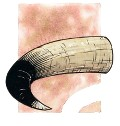Kiri-Jolith (Adaletin Kılıcı): Kiri-Jolith zafer, şeref, itaat, adalet ve adaletli savaşımın tanrısıdır. Solamniya Şövalyeleri arasındaki Kılıç Tarikatı'nın tanrısıdır. Kontrolü altındaki alanlar arasında savaş, cesaret ve kahramanlık vardır. Sembolleri, bizonun boynuzları ya da boynuzlu savaş baltası (Thorbardin, Kharolis) dır. Renkleri kahverengi ve beyazdır. Takımyıldızı, bir bizon kafası şeklindedir. Avatarı büyük bir savaş baltasına sahip dev gibi bir minotordur. Diğer isimleriyse bölgelerine göre şunlardır: Corij (Ergoth), Bıçak Kijo (Thorbardin), Jolith (Kharolis/Tarsis), Savaşçı Qu'an (Uigan), İmparator (Mithas).
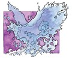Habbakuk (Balıkçı Kral): Habbakuk, Kiri-Jolith'in genç ikizidir ve deniz ve toprak üzerindeki tüm hayatı yaratan ve yöneten tanrıdır. Özellikle orman koruyucuları ve denizciler tarafından sevilir. Kontrolü altındaki alanlar arasında hayvan yaşamı, deniz, yaratım ve hırs vardır. Sembolleri mavi kuş ya da mavi zümrüdüanka (Ergoth) dır. Renkleri deniz mavisi ve beyazdır. Takımyıldızı bir zümrüdüanka şeklindedir. Avatarları çok çeşitlidir; karada büyük mavi bir kuş ya da mavi ateşlerle parlayan bir zümrüdüanka, denizdeyse dev, mavi bir yunustur. Diğer isimleriyse, bölgelerine göre şunlardır: Mavi Zümrüdüanka (Ergoth, Silvanesti, Qualinesti), Gökyüzülordu (Balifor, Goodlund), Deniz Lordu (Mithas).
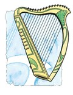Branchala (Yaşamın Şarkısı): Ozan Kralı Branchala, Krynn'de yaşayan yaratıklarının ruhlarını, kendi ölümsüz ruhunun özü olan müziğin yardımıyla oluşturan bir tanrıdır. Kontrolü altındaki alanlar arasında elfler, kenderler, müzik, ormanlar ve güzellik vardır. Sembolleri ozan harbı ya da flüt (Goodlund, Qualinesti, Silvanesti) tür. Renkleri sarı ve yeşildir. Takımyıldızı bir harp şeklindedir. Avatarları bulundukları bölgenin insanlarına benzerler ve halkın arasına karışmışlardır. Genellikle bir oduncu, orman koruyucusu, bir ozan, hatta bir dinsiz (yalancı) rahip bile olabilir. Diğer isimleriyse, bölgelerine göre şunlardır: Müzikefendisi (Goodlund), Astra (Qualinesti), Astarin (Silvanesti), Bran (Ergoth), Bahçıvan (Mithas), Bardilun (Thorbardin).
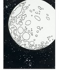Solinari (Güçlü El): Paladin ve Mishakal'ın üçüncü oğlu olan Solinari, Beyaz Cübbeliler'in ve iyi büyünün tanrısıdır. Krynn'i oldukça fazla sevmesinden dolayı, onu iyi büyüyle ödüllendirmiştir. Kontrolü altındaki tek alan İyi Büyü'dür. Sembolleri beyaz daire ya da beyaz küredir. Takımyıldızı yoktur fakat dünyaya ay olarak görünür – Beyaz ay Solinari olarak. Krynn'e diğer tanrılara göre daha yakın olmasına karşın (ayının yakın olmasından dolayı) çok nadiren dünya üzerinde avatar şeklinde görünür. Diğer isimleriyse, bölgelerine göre şunlardır: Solin (Ergoth), Beyaz-göz (Goodlund, Balifor), Tanrı'nın Gözü (Thorbardin), Fildişi Disk (Hylo), Deniz Feneri (Mithas).
II. Karanlığın Tanrıları
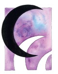Kraliçe Takhisis (Karanlıklar Kraliçesi): Takhisis kötülüğün somutlaştırılmış şeklidir. Sadece ahmaklar ve çocuklar onun adını açıkça söyleyebilirler. Adı karanlığı, yıkımı ve ölümü çağrıştırır. Takhisis Şövalyeleri ve tüm diğer kötü oluşumların başıdır. Kontrolü altındaki alanlar arasında gece, kötü ejderhalar, nefret, entrika ve kaos vardır. Sembolü siyah hilaldir. Renkleri siyah ya da parlak siyahtır. Takımyıldızı, Beş Kafalı Ejderha takımyıldızıdır. Takhisis'in en sevdiği iki avatar şekli vardır; biri beş kafalı bir kromatik ejderha, diğeriyse güzelliğiyle cezbeden bir kadındır. Diğer isimleriyse bölgelerine göre şunlardır: Ejderha Kraliçe (Ergoth, Silvanesti), Tii'Mhut (İstar), Birçok Yüzün Tanrısı (Hylo), Mai-tat (Tarsis), Fesat Nilat (Buzduvarı, Bozkırlı), Sahte Metal Tamex (Thorbardin), Hem Bütün Reklerin Hem de Hiçbirinin Kraliçesi (Solamniya), Leydi Kaos (Mithas), Karanlıkleydi (Ogre), Mwarg (Hobgoblin).
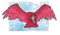Sargonnas (Karanlık İntikam): Takhisis'in eşi olan Sargonnas hakkında pek fazla şey bilinmemektedir. Sargonnas çabuk öfkelenen ve hain bir tanrıdır. Sinirlendiğinde yolundaki her şeyi yok ederek ilerler ya da müritlerine bu işi yaptırır. Kendisine yapılan bir şeyin intikamını yüzyıllar geçse de almaya çabalar. Kontrolü altındaki alanlar arasında intikam, yıkım, entrika, volkanlar, ateş ve çöller vardır. Sembolleri bir kırmızı akbaba ya da bir kırmızı yumruk (Thorbardin, İstar) dır. Renkleri kırmızı ve kükreyen bir sese sahip lavdan oluşma bir ateş elementalidir. Diğer isimleriyse bölgelerine göre şunlardır: Argon (İstar, Ergoth), Ateşgetirici (Hylo), Misal-Lasim (Tarsis), Arzulu Gonnas (Buzduvarı), Bükümcü Sargonax (Thorbardin), Kinthalas (Silvanesti), Kinis (Qualinesti), Yokedici (Mithas).
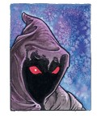Morgion (Kara Rüzgar): Morgion, hastalık ve çürümüşlüğün tanrısıdır. Tüm diğer tanrıların eşliğini kabul etmemiş ve onlarla planlarını tartışmamıştır. Düşüncelerini sadece sadık müritleriyle paylaşır. Gizlilik Morgion'un yoludur. Kontrolü altındaki alanlar arasında hastalık, çürüme, salgın, zayıflık ve suikast vardır. Sembolleri iki kırmızı gözlü bir kukuleta, baş aşağı duran bir balta (Thorbardin) ya da bir sıçan pençesi (Hylo) dir. Renkleri koyu kahverengi ve siyahtır. Takımyıldızı taçlı, örtülü bir kafa görüntüsü üzerinde kırmızı iki gözü şeklindedir. En çok kullandığı avatarları, kırmızı iki gözü olan yoğun, kara bir bulut ve siyah kapüşonlu ya da peçeli bir rahibe ya da cellattır. Diğer isimleriyse bölgelerine göre şunlardır: H'rar (Ergoth, İstar), Gormion (Tarsis), Morgi (Buzduvarı), Paslordu Morgax (Thorbardin), Veba (Mithas), Keçilordu Anthrax (Hobgoblin).
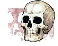Chemosh (Ölümün Lordu): Chemosh, Krynn üzerindeki tüm namevtlerin tanrısıdır. Chemosh ele geçirmek istediklerini "sonsuz yaşam" ile kandırır ve daha sonra da o kişileri namevt ordusuna katar. Kontrolü altındaki alanlar arasında tüm namevtler, yağmalayıcılar ve düşmanlar vardır. Sembolü sarı bir kurukafadır. Renkleri siyah ve soluk sarıdır. Takımyıldızı bir kurukafa şeklindedir. Avatar olarak dolaştığında siyah cübbeler içinde çok yakışıklı bir adam ya da üzeri değerli takılarla kaplı bir lich görünür. Diğer isimleriyse bölgelerine göre şunlardır: Aeleth (Ergoth), Derinlerin Dron’u (Tarsis), Chemos Joton (Buzduvarı), Khemax (Thorbardin), Yaşamfelaketi (Mithas), Orkrust (Hobgoblin).
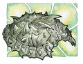Zeboim (Karanlık Deniz): Zeboim, Takhisis ve Sargonnas'ın kızı ve Denizlerin Kraliçesi'dir. Oldukça az sayıda rahibi olan Zeboim'in nasıl davranacağı belli olmadığından ölümcül bir düşman ve tehlikeli bir dosttur. En büyük düşmanı Habbakuk'tur, çünkü denizlerin tek hakimi olmak istemektedir. Cücelerin kendisi hakkında çok az şey bilmelerinden dolayı, onları su üzerinde doğrudan dibe batmakla lanetlemiştir. Kontrolü altındaki alanlar arasında denizler, fırtınalar, kasırgalar, hava olayları, namevt deniz yaratıkları ve kıskançlık vardır. Sembolü bir deniz kaplumbağası kabuğunun kabartmasıdır. Renkleri yeşil ve kırmızıdır. Takımyıldızı bir deniz kaplumbağası şeklindedir. Avatar olarak insan şeklindedir, fakat en sevdiği hali güzel bir bayan suratına sahip dev bir deniz kaplumbağasıdır. Diğer isimleriyse bölgelerine göre şunlardır: Rann (Ergoth), Zyr (Tarsis), Zebir Jotun (Buzduvarı), Bhezomiax (Thorbardin), Girdap (Mithas).
Hiddukel (Yalanlar Prensi): Hiddukel, haksız kazancın, bahislerin ve yalanın tanrısıdır. Hiddukel yaşayan ruhların ticaretini yapar. Girdiği bir bahis sonucu Gritaş'ın yapılmasını sağlamıştır. Kontrolü altındaki alanlar arasında iş uygulamaları, lanetli ruhlar, aç gözlülük, kölelik ve ihanet vardır. Sembolü kırık çift kefeli bir esnaf terazisidir. Renkleri kırmızı ve kemik rengidir. Takımyıldızı kırık bir terazi görünümündedir. Avatar olarak kendisine çok şişman olan, soğuk bakışlı, boncuk gözlü ve yağcı bir gülümsemeye sahip bir insan seçer. Diğer isimleriyse bölgelerine göre şunlardır: İhanetçi (Mithas), Usk-Do (Hobgoblin), Kusurlu Hitax (Thorbardin), M'Fistos (İstar).
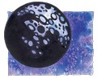Nuitari (İç Kemirici Karanlık): Nuitari, kara büyünün tanrısıdır ve büyüsüne duyduğu aşk yüzünden diğer kötülük tanrıları kadar kötülükle kararmamıştır. Diğer büyü tanrıları gibi, kendi aleminden ayrılmış ve Ölümlü Krynn'e yakın bir yer kendisine seçmiştir. Bu kara ay sadece kendi müritleri tarafından görülebilir. Kara Cübbeliler'in tanrısıdır. Kontrolü altındaki alan sadece karanlık büyüdür. Sembolü siyah daire ya da küredir. Rengi siyahtır. Takımyıldızı yoktur, sadece siyah ay şeklinde Krynn'in gökyüzünde görünür. Avatar olarak kendisine siyah cübbeler içinde kabarık siyah saçlı, sessiz, güçlü bir genç adam seçtiği gibi bir yaramaz ve kötü bir çocuk da seçebilir. Diğer isimleriyse bölgelerine göre şunlardır: Geceyağmacısı (Mithas), Karanlık (Elian), Siyah El (Balifor), Tanrı Olmayan (Thorbardin).
III. Tarafsızlık Tanrıları
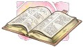Gilean (Boşluk): Gilean, Tarafsızlık Tanrıları'nın aile reisidir ve içinde tüm bilgilerin ve gerçek isimlerin saklı olduğu Tobril kitabını koruyan tanrıdır. Sadece Tobril'i korumakla görevli olmayan Gilean ayrıca İyi ve Kötü Tanrılar arasındaki dengeyi korumakla da görevlidir. Bunu yaparken diğer Tarafsızlık Tanrıları'ndan da yardım alır. Kontrolü altındaki tek alan, her türlü bilgi alanıdır. Sembolü açık duran bir kitaptır. Rengi gridir. Takımyıldızı bir açık kitap şeklindedir ve gökyüzünde Paladin ile Takhisis'in arasında durur. Gilean avatar olarak kendisine orta yaşlı, herhangi bir ırka mensup ya da cinsiyete sahip olan bir kütüphane görevlisidir. Diğer isimleriyse bölgelerine göre şunlardır: Kitap Gilean, Gri Yolcu, Bilge, Ruhların Geçidi.
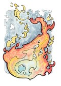Sirrion (Akan Alev): Sirrion, doğal güçlerin ve ateşin tanrısıdır. Parlayan güneşten, küçük bir ışık kaynağına kadar bütün ateşler onun kontrolü altındadırlar. Bir ormanda bulunan yaşlı ağaçların yerini yeni ağaçların alması için orman yangını da çıkartabilir, ateşle oynayan bir çocuğun ateşe saygı göstermesi için elinin yanmasını da sağlayabilir. Kontrolü altındaki alanlar arasında alev, doğal güçler, değişim ve dönüşüm vardır. Sembolü, çok renkli bir ateştir. Renkleri parlak kırmızılar ve sarılardır. Takımyıldızı yoktur; gökyüzünde sadece kırmızı-sarı renkte parlayan bir yıldız olarak görünür. Sirrion genellikle alevlerin içinde yüzünü gösterir, ama ateşin değişik renklerinde görünen bir cübbeye sahip insan şeklinde de görünebilir. Diğer isimleriyse bölgelerine göre şunlardır: Ateşefendisi, Simyacı, Büyücü (Mithas).
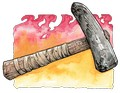Reorx (Demirci): Reorx, cücelerin ve onların endüstrilerinin (demircilik) tanrısıdır. Ayrıca çekiciyle Kaos'dan bir parça kopartarak Krynn'in ve gökyüzündeki yıldızların oluşmasını sağlamıştır. Hiddukel'in oyununa gelerek Gritaş'ı yapmıştır. Kontrolü altındaki alanlar arasında cüceler, silahlar ve teknoloji vardır. Sembolleri, döven bir çekiç ya da cüce yapımı bir çekiç (Thorbardin) dir. Renkleri arduvaz grisi ve kırmızıdır. Takımyıldızı yoktur; gökyüzünde bir alev parçası gibi kıpkırmızı parlayan ve Sargonnas'ın takımyıldızının yanında duran bir yıldız olarak görünür. Reorx avatar olarak genellikle sarhoş ve kumarbaz olan Dougan Redhammer adlı bir cüceyi kendisine seçer. Diğer isimleriyse bölgelerine göre şunlardır: Örs (Elian), Silahustası (Mithas), Usta Reorx (Gnom), Zanaatkâr Reorx (Kender).
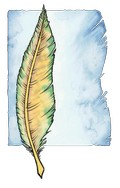Chislev (Hayvan): Chislev doğanın kendisidir; korkusu sonbaharı, umutsuzluğu kışı, umudu baharı ve eğlenme isteği de yazı yaratmıştır. Müritleri gibi, tüm hayvan ve bitkiler de ona şükran borçludurlar; sabahleyin çiçekler güneşe doğru dönerlerken aynı zamanda Chislev'e doğru da dönmüş olurlar, onu her sabah selamlarlar. Kontrolü altındaki alanlar arasında doğa, yabanıl hayat ve hayvanlar vardır. Sembolü kahverengi, sarı ve yeşil renkli bir tüydür. Renkleri kahverengi, sarı ve yeşildir. Takımyıldızı yoktur; Mishakal'ın takımyıldızı ve Zivilyn'in yıldızına yakın duran ve sarı renginde parlayan bir yıldızı vardır. Chislev, avatar olarak kendisine genellikle güzel bir insan ya da elf kadını seçer. Diğer isimleriyse bölgelerine göre şunlardır: Vahşi Kişi (Mithas), Issız Yer.
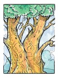Zivilyn (Hayat Ağacı): Tüm bilgeliklerin tanrısı olan Zivilyn'in kendisi kutsal Hayat Ağacı'dır. Gilean bütün bilgileri kendinde tutarken, Zivilyn de bilgelikleri kendisinde tutmaktadır. Bilgelik olmadan bilginin, bilgi olmadan da bilgeliğin bir işe yaramadığını bilen bu iki tanrı hep birlikte hareket etmektedirler. Chislev'in eşidir. Kontrolü altındaki tek alan bilgeliktir. Sembolü yeşil ve altın renklerinde dev gibi bir ağaç ya da bir vallen ağacıdır. Renkleri yeşil ve altın rengidir. Takımyıldızı yoktur; Mishakal'ın takımyıldızı ve Chislev'in yıldızı arasında parlayan bir yıldızı vardır. Zivilyn, avatar olarak kendisine herhangi birisini seçebilir fakat genellikle yaşlı, bilge bir adam kimliğiyle görünür. Diğer isimleriyse bölgelerine göre şunlardır: Dünya Ağacı, Hayat Ağacı (Qualinesti, Silvanesti), Bilge Kişi (Mithas).
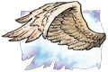Shinare (Kanatlı Zafer): Shinare, zenginlik, endüstri ve ticaret tanrısıdır. Tüccarlar, esnaf halk ve benzeri kesimlerden kendi takipçilerini oluşturmuştur. Tembelliğe tolerans gösteremez; tembel tembel dolaşan biri ona, gözleri önünde hızla ölüyor görünür. Ayrıca Sirrion'un eşidir. Kontrolü altındaki alanlar arasında zenginlik, endüstri, özgürlük ve güç vardır. Sembolü bir grifon kanadıdır. Renkleri altın rengi, gümüş rengi ve kahverengidir. Takımyıldızı yoktur, Habbakuk ve Branchala'nın takımyıldızlarının yakınında gümüş rengi bir yıldızı bulunur. Shinare, avatar olarak kendisine zengin, saygıdeğer bir kişi ya da aynı özelliklere sahip bir tüccar seçer. Diğer isimleriyse bölgelerine göre şunlardır: Kanatlı Kişi (Silvanesti, Qualinesti), Gümüş Efendi (Thorbardin), Yürüyen Özgürlük (Ergoth), Denge (Mithas), Terazi (Mithas).
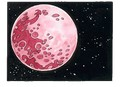Lunitari (Peçeli Bakire): Lunitari, Tarafsız büyünün ve illüzyonların tanrısıdır. Büyü aşkı sayesinde Kırmızı Cübbeliler tarikatı kurulmuştur. Birçok büyücü onun tarikatı altında büyü çalışmak ister, çünkü büyüde pek bir kısıtlama getirmez. Solinari'yle uzun zamandan beri dostturlar ve çoğu zaman birlikte çalışırlar. Kontrolü altında tarafsız büyü ve illüzyon alanları vardır. Sembolü, kırmızı bir daire ya da küredir. Rengi kırmızı ya da macenta gridir. Takımyıldızı yoktur fakat gökyüzünde kırmızı ay formunda görünür. Lunitari avatar olarak kendisine baştan aşağı kırmızı cübbeler içinde duran kızıl saçlı, güzel bir insan kadını seçer. Diğer isimleriyse bölgelerine göre şunlardır: Luin (Ergoth), Kırmızı-Göz (Goodlund), Gece Mumu (Thorbardin), İllüzyon Bakiresi (Mithas).
Kaynak: http://frpnet.net